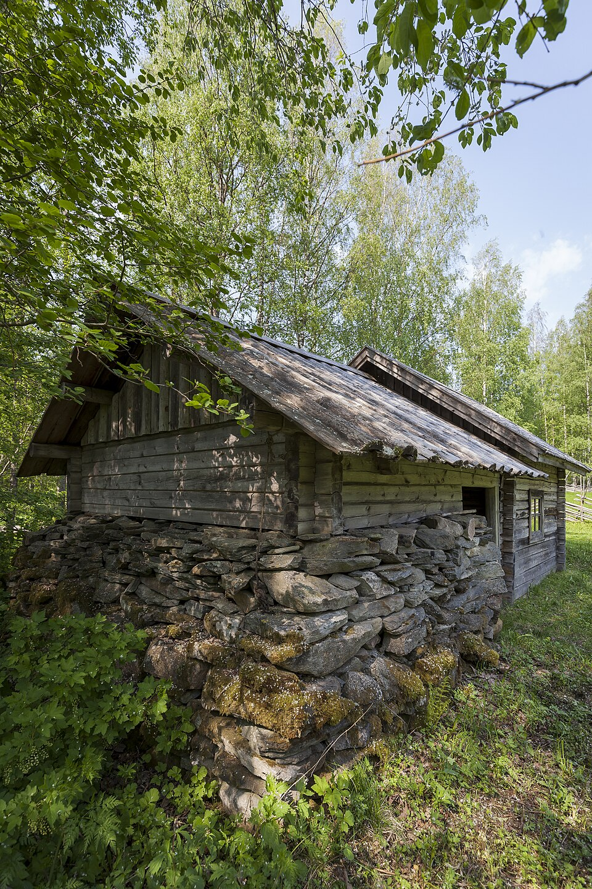

Savusauna
Koko: Max. 15 henkeä
Hinta: Arkisin 180 € / ilta | Viikonloppuisin 250 € / ilta
Pehmeät, pitkät löylyt ja ainutlaatuinen tunnelma.
Aidot rantalöylyt Seinäjoella
Kaipaatko irti arjesta? Me sijaitsemme kauniilla Kuivasjärven rannalla Seinäjoella ja tarjoamme aitoa suomalaista saunatunnelmaa. Vuokraamme iltakäyttöön kolmea erilaista saunaa: perinteistä savusaunaa, tunnelmallista puulämmitteistä rantasaunaa sekä kodikasta pientä mökkisaunaa.
Ei enää turhia puhelinsoittoja vapaista illoista – löydät meiltä suoraan ajantasaiset tiedot seuraavan kahden viikon vapaista saunomisilloistamme.
Meillä viikonloput ovat suuren kysynnän vuoksi hinnoiteltu arki-iltoja korkeemmiksi. Valitse suosikkisi ja tule löylyihin!

Koko: Max. 15 henkeä
Hinta: Arkisin 180 € / ilta | Viikonloppuisin 250 € / ilta
Pehmeät, pitkät löylyt ja ainutlaatuinen tunnelma.

Koko: Max. 10 henkeä
Hinta: Arkisin 120 € / ilta | Viikonloppuisin 160 € / ilta
Perinteinen sauna aivan rannan tuntumassa.

Koko: Max. 5 henkeä
Hinta: Arkisin 80 € / ilta | Viikonloppuisin 110 € / ilta
Intiimimpi vaihtoehto pienemmälle porukalle.
Voit tarkistaa vapaat ajat Saunat ja Vapaat illat -sivulta ja lähettää meille suoraan varauspyynnön Ota yhteyttä -sivun kautta. Vahvistamme varaukset aina puhelimitse!